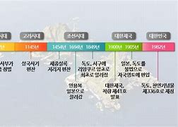

태고의 신비를 간직하고 있는 독도의 자연을 소개해 드립니다.
대한민국의 아름다운 섬, 독도

독도의 역사
삼국시대: 독도는 신라 지증왕 13년(512년)에 이사부 장군이 우산국(울릉도와 독도)을 복속시킨 이후 신라의 영토로 편입되었습니다. 고려시대: 고려시대에도 울릉도와 독도가 고려의 영토로 인식되었습니다. 고려사 등의 역사 기록에서 독도에 대한 언급을 찾아볼 수 있습니다. 조선시대: 조선 왕조는 세종실록 지리지와 동국여지승람 등의 기록에서 독도를 조선의 영토로 명확히 기술하고 있습니다.
1950년대 이후: 한국 정부는 독도에 대한 영유권을 확립하고, 독도 경비대를 주둔시키며 실질적인 지배를 이어오고 있습니다. 독도에는 현재 한국 국민들이 거주하며, 독도의 생태와 환경을 보호하기 위한 다양한 활동이 이루어지고 있습니다.
